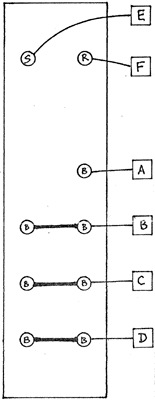

|
ANALOG SHIFT REGISTER.
 PC board No. 1075SR This module can only be tested with the help of three auxiliary modules: 1. a pulse source such as the NEGATIVE SLEW able to output a repetitive pulse train of at least 4 volts. Other modules suitable for this function are the ENVELOPE GENERATOR, VC SLEW GEN., SMOOTH & STEPPED, RANDOM VOLTAGE GEN, or the PROGRAMMER manually operated. 2. a source of relatively fast varying control voltages in the range of 0 to +8V (the range of the ASR) such as the blue outputs of the VCO, RANDOM VOLTAGE GEN., POSITIVE or NEGATIVE SLEWS, ENVELOPE GENERATOR, or the black outputs of the VC SLEW and SMOOTH & STEPPED GEN. when self-re-cycling. 3. a voltage controllable'source of audio waves such as the VC OSCILLATOR, NEG or POS. SLEW, the VC FILTER (fed-back as a VCO) the ENVEIOPE GEN.. etc. etc... To test the ASR, plug the pulse source (in the last sub-sonic range) into the pulse input of the ASR (red jack). Patch the source of VC into the ASR's main input (diamond). Patch output I of the ASR into the voltage controllable V.CO or other monitoring module (whose output should be listened to). Make sure that the processing of the latter monitor module is set fully operative. Listen for step-wise sampling over the loudspeakers, varying the rates of the various modules to obtain certainty as to the functionality of output 1. Repeat the test by patching outputs 2 & 3 into the monitor module. To test the daisy-chain capability of the bottom most output ("special"), you should preferably test it according to our operating manual using a second ASR. Note, too, that the above tests does not test for whether outputs 1,2 & 3 are in proper sequence. This may best be done using three monitoring VCOs. Otherwise, a good visual check of proper wiring is all that's necessary, since electrically the module will have been tested through the above procedure.
|